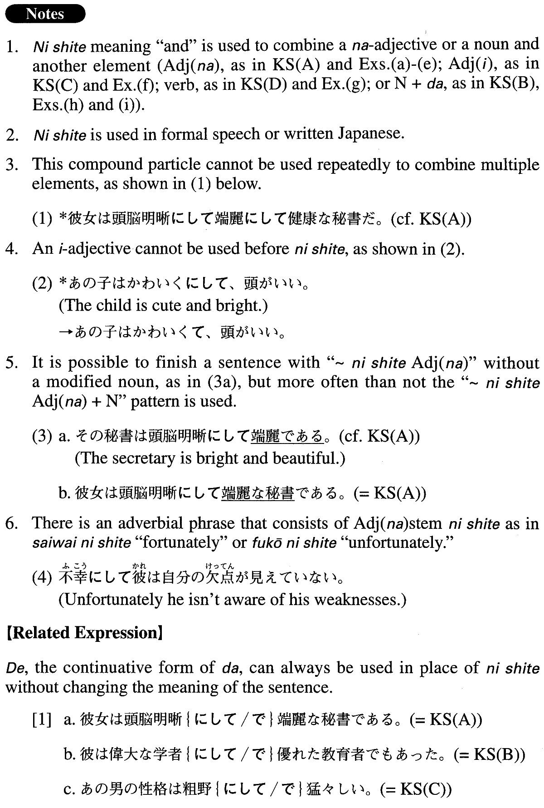

←
DoJG
→
にして (2)
(A. 429)
Example sentences
(ksa).
彼女は頭脳明晰
にして
端麗な秘書である。
She is a bright and also beautiful secretary.
(ksb).
彼は偉大な学者
にして
優れた教育者でもあった。
He was both a distinguished scholar and an excellent educator.
(ksc).
あの男の性格は粗野
にして
猛々しい。
(The character of) That man is boorish and fierce.
(ksd).
首相の容体は不安定
にして
、予断を許さない。
The Prime Minister's condition is unstable and unpredictable.
(a).
その政治家は志操堅固
にして
、高潔清廉な人だった。
The politician was a man of principle, purity and nobility.
(b).
これほど巧妙
にして
完璧な犯罪はないでしょう。
No crime could be as ingenious and perfect as this one.
(c).
彼女の絵は緻密
にして
軽やかな筆づかいで圧倒的な支持を集めた。
Her paintings have become phenomenally popular (literally: gathered overwhelming support) for their elaborate and light-hearted brush strokes.
(d).
あの文法辞典は詳細
にして
明解な説明が施されている。
That grammar dictionary has clear, detailed explanations.
(e).
これは堅牢
にして
素朴な民芸品であります。
This is a solid and simple (example of) folk art.
(f).
この監督の映画はすべて陰鬱
にして
物悲しい
。
All of this director's films are gloomy and sad.
(g).
あの政治家の言動は非常識
にして
、絶えず批判されている。
The way that politician speaks and acts defies common sense, and he is criticized endlessly.
(h).
栄太は内心頑固
にして
決して人に使われる男ではない。
Eita is (a man who is) stubborn of spirit, and is never taken advantage of by others.
(i).
彼は優秀な研究者
にして
熱烈な教育者でもある。
He is a superb researcher and a fervent educator.
Formation
(i)
Adjectiveなstem
にして
高価
にして
Something is expensive and
(ii)
NP1
にして
NP2
教育者
にして
実業家
An educator and a businessman
素晴らしい教育者
にして
研究者
A superb educator and a researcher
聡明な指導者
にして
優しい人間
A brilliant leader and a kind human being
